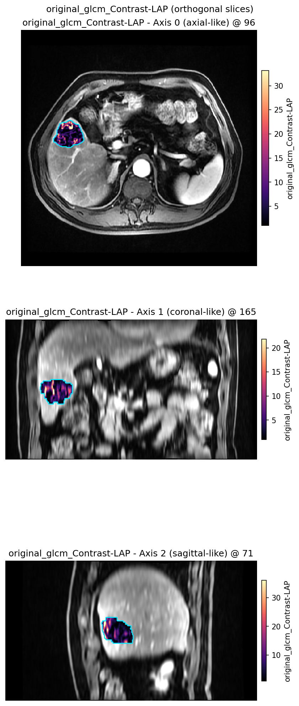

体素纹理特征图#
目标：计算并显示 体素级纹理 图 — densified voxel_radiomics 列（此处 GLCM Contrast）— 作为发表级 2D 切片。
voxel_radiomics uses Py放射组学 / Torch放射组学 for per-体素 maps; keep the enabled featureClass list small for interactive demos. Neighbourhood entropy (local_entropy) is a separate statistic, not this texture.
Walk-through (Guide): 纹理特征图：单独与联合强度. For multi-GPU 队列 timings, see 执行后端上的原子组件. Scheduling (serial, skip, resume, process pool) is 执行后端上的原子组件. This page keeps runtime / backend notes that the gallery does not repeat.
谁构建纹理矩阵#
体素纹理类两阶段： 构建矩阵 （GLCM、GLDM、GLRLM、GLSZM、NGTDM），再 求值特征公式 。一阶无共现矩阵：收集核窗口并归约。HABIT 暴露三运行时：
Runtime |
纹理矩阵 |
特征公式 |
|---|---|---|
PyRadiomics（CPU） |
|
NumPy |
C 矩阵 + TorchRadiomics |
同一 C 扩展 |
PyTorch（GPU） |
HABIT CUD |
|
相同 TorchRadiomics 公式（GPU） |
上游 pytorchradiomics 为中间行：每个 _calculateMatrix 仍调用 cMatrices.calculate_glcm （及 GLDM / GLRLM / GLSZM / NGTDM 同类）再 self.tensor(...) 。HABIT 在 habit.kernels.radiomics.torchradiomics vendoring 该代码，并在 use_gpu_matrices 后加 GPU 矩阵构建（默认 "auto" ：torch 设备为 CUDA 时开启）。其 README 在 \(16^3\) 任务上 GLCM 636 s → 23.8 s 是中间行对 PyRadiomics（CPU）， 非 HABIT CUDA。
在同一 habit 环境中安装。 上表三行的 IBSI voxel_radiomics 需要 PyRadiomics （Installation 步骤 6）。两行 GPU 还需该环境中的 PyTorch ： conda activate habit ，打开 pytorch.org → Get Started / Start Locally，选择 OS / Pip / Python / Compute Platform 并运行打印的命令。见 Installation 步骤 5。
HABIT 中一阶特征收集核窗口并在 CUDA 上归约。非 C 纹理矩阵，故中间列不适用。
模拟三方对比#
端到端基于体素的 execute() 、 dtype=torch.float64 、固定体积上 n = 5 次重复（均值 ± 样本标准差）：
高斯
N(300, 80)，形状(20, 48, 48)，种子04096 ROI 体素,
kernelRadius=3,binWidth=25,voxelBatch=512first-order: Energy, Entropy, Mean, 90Percentile, Uniformity; GLCM: JointEntropy, Idm, Contrast; GLDM: DependenceEntropy, LargeDependenceEmphasis, SmallDependenceEmphasis; GLRLM: ShortRunEmphasis, RunPercentage, GrayLevelNonUniformity; GLSZM: ZonePercentage, LargeAreaEmphasis, ZoneVariance; NGTDM: Coarseness, Contrast, Busyness
hardware: NVIDIA GeForce RTX 3070 Laptop GPU
列名：
Py放射组学 (CPU) — C-extension matrices and NumPy formulas (first-order: CPU neighbourhood stats)
C matrices + TorchRadiomics — C 扩展矩阵、GPU 公式（
use_gpu_matrices=false）HABIT CUDA — GPU 矩阵与 GPU 公式（
use_gpu_matrices=true；CUDA 上一阶 gather + 公式）
Time (s), mean ± s.d.
Class |
PyRadiomics（CPU） |
C 矩阵 + TorchRadiomics |
HABIT CUD |
|---|---|---|---|
First-order |
0.760 ± 0.030 |
n/a |
0.037 ± 0.023 |
GLCM |
2.556 ± 0.042 |
0.331 ± 0.033 |
0.197 ± 0.087 |
GLDM |
0.189 ± 0.007 |
0.182 ± 0.014 |
0.154 ± 0.040 |
GLRLM |
1.567 ± 0.074 |
1.060 ± 0.014 |
0.530 ± 0.070 |
GLSZM |
0.138 ± 0.004 |
0.152 ± 0.008 |
0.168 ± 0.006 |
NGTDM |
0.175 ± 0.007 |
0.150 ± 0.003 |
0.131 ± 0.005 |
GLCM 与 GLRLM 为 C 扩展瓶颈，GPU 公式与 GPU 矩阵均有帮助。一阶无纹理矩阵；HABIT CUDA 为设备上核 gather 加归约。本 4096 体素玩具上 GLSZM 在 CPU 已便宜（启动开销）。
Accuracy, max abs. error of the 特征 maps (worst 特征 in the class), mean ± s.d. over the same 5 repeats:
Class |
C+Torch 对 PyRadiomics |
HABIT CUDA 与 PyRadiomics |
HABIT CUDA 对 C+Torch |
|---|---|---|---|
First-order |
n/a |
\(1.49 imes 10^{-8} pm 0\) |
n/a |
GLCM |
\(1.42 imes 10^{-14} pm 0\) |
\(1.42 imes 10^{-14} pm 0\) |
\(7.77 imes 10^{-17} pm 3.0 imes 10^{-17}\) |
GLDM |
\(1.78 imes 10^{-15} pm 0\) |
\(1.78 imes 10^{-15} pm 0\) |
0 |
GLRLM |
\(3.55 imes 10^{-15} pm 0\) |
\(3.55 imes 10^{-15} pm 0\) |
0 |
GLSZM |
\(8.88 imes 10^{-16} pm 0\) |
\(8.88 imes 10^{-16} pm 0\) |
0 |
NGTDM |
\(5.55 imes 10^{-16} pm 0\) |
\(5.55 imes 10^{-16} pm 0\) |
\(1.67 imes 10^{-16} pm 0\) |
Texture C+Torch / HABIT CUDA vs PyRadiomics is NumPy vs torch formula
order, not a matrix mismatch. HABIT CUDA vs C+Torch sits at machine
epsilon because integer count matrices are bit-identical
(tests/kernels/test_*_gpu_parity.py, 81 cases). First-order is
looser (\(10^{-8}\)) because percentiles use different quantile
algorithms. Force the matrix backend with use_gpu_matrices: true /
false on the voxel_radiomics Spec.
临床大肿瘤三方基准#
在小合成玩具（如上 4,096 体素）上，核 launch 开销与 CUDA 驱动延迟稀释 GPU 加速全力。真实临床成像中肿瘤常含数万体素。大负载下性能瓶颈完全转移：
纯 PyRadiomics (CPU) ：单线程 C 扩展（
cMatrices）须对数百万潜在邻对逐体素迭代。大体上每受试者需数分钟。C matrices + TorchRadiomics (GPU) ：将特征公式卸载到 PyTorch 有帮助，但纹理矩阵构造仍钉在单线程 CPU 循环。大矩阵还须代价高的主机到设备（H2D）传输。
HABIT 内置 GPU ： Both matrix construction (
gpumatrices) and 特征 evaluations execute entirely within GPU VRAM with zero host-to-device intermediate copy, yielding dramatic speedups on large clinical lesions.
下面的基准测试评估了这三种运行时在来自 HABIT 演示队列的临床肝脏病变病例上的表现（硬件：NVIDIA GeForce RTX 3070 笔记本 GPU， binWidth=25 ， kernelRadius=1 ）：
Subj001（34,694 ROI 体素）
特征任务 |
纯 PyRadiomics（CPU） |
C + TorchRadiomics（GPU） |
HABIT 内置 GPU |
加速（相对 CPU / 相对 C+Torch） |
|---|---|---|---|---|
GLCM Contrast |
68.71 s |
7.54 s |
2.68 s |
25.6× / 2.8× |
GLCM 4 个特征 |
85.33 s |
7.04 s |
3.02 s |
28.3× / 2.3× |
GLRLM（2 个特征） |
13.25 s |
8.02 s |
2.61 s |
5.1× / 3.1× |
一阶（4 特征） |
5.30 s |
n/a |
1.99 s |
2.7× / n/a |
Subj005（80,084 ROI 体素——大肿瘤基准）
运行时架构 |
矩阵构建 |
特征公式 |
Time (s) |
Speedup |
|---|---|---|---|---|
纯 PyRadiomics（CPU） |
单线程 C (CPU) |
NumPy（CPU） |
414.58 s (~7 min) |
1.0× |
C + Torch放射组学 (GPU) |
单线程 C (CPU) |
PyTorch（GPU） |
39.62 s |
10.5× |
HABIT 内置 GPU |
并行 CUDA（GPU） |
PyTorch（GPU） |
7.59 s |
54.6× |
在约 8 万体素体积上，HABIT 将 7 分钟 CPU 瓶颈压到 7.6 秒，并通过消除 CPU 矩阵构建比上游 TorchRadiomics 快 5.2×。
云端 RTX 4080 SUPER 基准（54,913 ROI 体素——完整 90 特征提取）
在 NVIDIA GeForce RTX 4080 SUPER（32 GiB）与 Intel Xeon Platinum 8352V CPU 上测量：
运行时架构 |
矩阵构建 |
特征公式 |
Time (s) |
Speedup |
|---|---|---|---|---|
纯 PyRadiomics（CPU） |
单线程 C (CPU) |
NumPy（CPU） |
19.48 s |
1.0× |
C + Torch放射组学 (GPU) |
单线程 C (CPU) |
PyTorch（GPU） |
1.64 s |
11.9× |
HABIT 内置 GPU |
并行 CUDA（GPU） |
PyTorch（GPU） |
0.70 s |
27.7× |
Numerical parity across all 54,913 体素 × 90 特征 (~4.94M values):
C + Torch放射组学 vs HABIT Built-in GPU: Max absolute difference = 0.0 (100% bit-identical matrix construction).
纯 CPU 与 HABIT 内置 GPU ：全部值平均绝对差 = 0.00137 （Energy/TotalEnergy 最大差 0.5，值约 2.45M，相对误差约 2e-7，因 float32 与 float64 求和）。数学定义仍相同。
多 GPU 队列扩展基准（16 受试者——878,608 ROI 体素，90 特征）
在 AutoDL 云主机多 GPU 上扩展稠密 3D 纹理特征提取（5× NVIDIA GeForce RTX 4080 SUPER 各 32 GiB，2× Intel Xeon Platinum 8352V 144 逻辑 CPU，503 GiB RAM）。每受试者 54,913 ROI 肿瘤体素（队列共 878,608 ROI 体素），提取完整 90 个放射组学特征：
Scenario |
执行设备 |
Workers |
墙钟时间（秒） |
吞吐量（subj/min） |
相对 CPU 串行加速 |
|---|---|---|---|---|---|
0 GPU（CPU 串行） |
CUDA=-1 (CPU) |
1 |
263.49 s |
3.64 |
1.0× |
0 GPU（CPU 并行） |
CUDA=-1 (CPU) |
2 |
138.03 s |
6.96 |
1.9× |
0 GPU（CPU 并行） |
CUDA=-1 (CPU) |
4 |
79.23 s |
12.12 |
3.3× |
0 GPU（CPU 并行） |
CUDA=-1 (CPU) |
8 |
49.16 s |
19.53 |
5.4× |
1 GPU (Cold Pool) |
CUDA=0 (GPU) |
1 |
19.30 s |
49.73 |
13.7× |
1 GPU (Cold Pool) |
CUDA=0 (GPU) |
2 |
17.44 s |
55.04 |
15.1× |
1 个 GPU（预热池） |
CUDA=0 (GPU) |
1 |
12.41 s |
77.33 |
21.2× |
5 GPU（冷池） |
CUDA=0,1,2,3,4 |
2 |
11.61 s |
82.68 |
22.7× |
5 GPU（冷池） |
CUDA=0,1,2,3,4 |
4 |
14.05 s |
68.32 |
18.8× |
5 GPU（冷池） |
CUDA=0,1,2,3,4 |
5 |
14.78 s |
64.97 |
17.8× |
5 GPU（温池） |
CUDA=0,1,2,3,4 |
5 |
4.16 s |
231.03 |
63.4× |
架构要点：
GPU 为何加速体素放射组学： 纯 CPU 生境负载（如
raw+ sklearn k-means）受单核限制，多 GPU 不优于多 CPU。voxel_radiomics做稠密邻域张量运算；HABIT 并行 CUDA 矩阵生成与 TorchRadiomics 卸载到 GPU，显著加速（ 相对 CPU 串行 63.4× ， 相对 8 CPU 核 11.8× ）。每 Worker GPU 隔离： 在
RunPolicy上配置cap_workers_to_gpu_pool=True时，HABIT 在每个子 worker 初始化器中调用pin_worker_visible_cuda_device()。每个 worker 进程暴露一张专用 GPU（槽 0 见卡 0，槽 1 见卡 1 等），消除进程间 CUDA 内存冲突与上下文切换开销。冷池 vs 热池 开销： 在冷启动一次性执行中，工作进程必须新建，导入 PyTorch 和 CUDA 运行时库（约 4 秒），在处理第一个受试者时初始化 GPU 上下文（约 2.4 秒），并在终止时优雅地退出（约 3 秒）。使用持久工作池（例如在
fit_predict()内部或通过with backend.reuse_workers():）时，工作进程和 CUDA 上下文保持驻留在内存中。这消除了进程启动/拆卸的摩擦，并允许 5-GPU 集群在 4.16 秒 内处理整个 16 个受试者的队列（超过 每分钟 230 个受试者 ）。小队列 worker 数甜点（为何冷池 2 worker 优于 5）： 单受试者 GPU 计算极快（~0.71 s），16 受试者总 raw 计算仅 ~11.4 s。2 worker（8 case/worker）raw 约 5.7 s 加进程 spawn 与 CUDA 主上下文初始化 ~5.9 s。冷池 5 worker（3–4 case/worker）raw 降至 ~2.8 s，但 spawn 5 子进程、初始化 5 CUDA 上下文与管理 5 IPC 队列引入 ~11.9 s 固定开销（16 不可被 5 整除带来轻微负载不均）。~2.9 s 计算节省被启动开销抵消。冷池小队列（<50 受试者） 2–4 worker 为最优吞吐甜点。池预热后或大队列（100–1000+ 受试者）计算远超启动时，5 GPU 线性多 worker 扩展（ 4.16 s ， 231 subjects/min ）。
Python API（sklearn 简写）#
The figure below is written by docs/source/examples/scripts/voxel_texture_demo.py.
Reproduce it:
python docs/source/examples/scripts/voxel_texture_demo.py
或粘贴相同 load + plot：:
from habit.contracts import cohort_from_directory
from habit.datasets import fetch_demo
from habit.viz import plot_voxel_texture_slice
from habit.voxel_features import extract_voxel_texture
# Change DATA / MODALITY / ROI to your preprocessed layout
DATA = fetch_demo() # or "demo_data/preprocessed"
MODALITY = "LAP"
ROI = "LAP"
subject = cohort_from_directory(DATA, modalities=(MODALITY,), roi=ROI)[0]
image_vol = subject.image(MODALITY)
mask_vol = subject.mask(ROI)
field = extract_voxel_texture(
image_vol,
mask_vol,
kernel_radius=1,
bin_width=25.0,
feature_classes={"glcm": ["Contrast"]},
)
fig = plot_voxel_texture_slice(
field, feature=0, anatomy=image_vol, roi_mask=mask_vol,
)
feature=0 is the first column (GLCM Contrast). A column name works too. Default mode="overlay" paints opaque 特征 colours inside the ROI on greyscale anatomy (optional cyan contour). alpha<1 is the explicit translucent option. mode="side_by_side" adds a sibling anatomy panel when you also want the raw image.
Layouts#
plot_voxel_texture_slice() 仅 2D 切片 （需要 matplotlib）:
* ``mode="overlay"`` — greyscale anatomy + opaque feature in ROI (default)
* ``mode="side_by_side"`` — anatomy + ROI contour | feature (sibling panel)
* ``mode="feature_only"`` — feature map alone
3D 体上省略 axis 得三正交面板行。面板用 display_convention="radiological" （以 ImageVolume 传解剖以免丢失 direction）。纹理图无内置 3D 体渲染；全 volumetric 浏览用 ITK-SNAP / 3D Slicer / napari。


默认 overlay 布局（plot_voxel_texture_slice() ）。#
Also see#
示例图库：纹理特征图：单独与联合强度
生境图图网络图：图拓扑特征